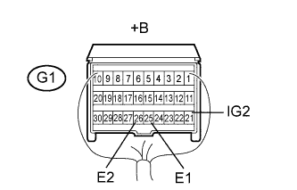
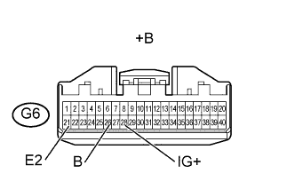

СИСТЕМА ПОДУШЕК БЕЗОПАСНОСТИ > Контрольная лампа аварийного состояния SRS остается включенной |
| 1.ПРОВЕРЬТЕ СИСТЕМУ ПЕРЕДАЧИ ДАННЫХ CAN |
Проверьте, не выводятся ли DTC системы передачи данных CAN.
| Результат | Следующий шаг |
| Выводятся коды DTC (для моделей с левосторонним рулевым управлением, с системой посадки и запуска) | А |
| Выводятся коды DTC (для моделей с левосторонним рулевым управлением, без системы посадки и запуска) | B |
| Выводятся коды DTC (для моделей с правосторонним рулевым управлением, с системой посадки и запуска) | C |
| Выводятся коды DTC (для моделей с правосторонним рулевым управлением, без системы посадки и запуска) | D |
| DTC не выводится | E |
|
| ||||
|
| ||||
|
| ||||
|
| ||||
| E | |
| 2.ПРОВЕРЬТЕ АККУМУЛЯТОРНУЮ БАТАРЕЮ |
Измерьте напряжение аккумуляторной батареи.
|
| ||||
| OK | |
| 3.ПРОВЕРЬТЕ РАЗЪЕМЫ |
Выключите зажигание.
Отсоедините провод от отрицательного (-) вывода аккумуляторной батареи и подождите не менее 90 секунд.
Проверьте правильность подключения разъемов к центральному блоку управления системы SRS и щитку приборов.
|
| ||||
| OK | |
| 4.ПРОВЕРЬТЕ ЖГУТ ПРОВОДОВ И РАЗЪЕМ (НАПРЯЖЕНИЕ ПИТАНИЯ ЦЕНТРАЛЬНОГО БЛОКА УПРАВЛЕНИЯ СИСТЕМЫ SRS) |
|  |
Отсоедините разъемы от центрального блока управления системы SRS.
Подсоедините провод к отрицательному (-) выводу аккумуляторной батареи и подождите не менее 2 с.
Установите замок зажигания в положение ON (ВКЛ).
Включите все электрооборудование (обогреватель стекла, стеклоочистители, фары, отопитель, вентилятор и т. д.)
Измерьте напряжение в соответствии со значениями, приведенными в таблице.
| Контакты для подключения диагностического прибора | Положение переключателя | Заданные условия |
| G1-21 (IG2) - G1-25 (E1) | Зажигание включено | 11 - 14 В |
| G1-21 (IG2) - G1-26 (E2) | Зажигание включено | 11 - 14 В |
| *a | Вид сзади разъема со стороны жгута проводов (к центральному блоку управления системы SRS) |
|
| ||||
| OK | |
| 5.ПРОВЕРЬТЕ ЖГУТ ПРОВОДОВ И РАЗЪЕМ (НАПРЯЖЕНИЕ ИСТОЧНИКА ПИТАНИЯ ЩИТКА ПРИБОРОВ) |
|  |
Отсоедините провод от отрицательного (-) вывода аккумуляторной батареи и подождите не менее 90 секунд.
Отсоедините разъем G6 от щитка приборов.
Подсоедините провод к отрицательному (-) выводу аккумуляторной батареи и подождите не менее 2 секунд.
Измерьте напряжение в соответствии со значениями, приведенными в таблице.
| Контакты для подключения диагностического прибора | Положение переключателя | Заданные условия |
| G6-28 (IG+) - G6-21 (E2) | Зажигание включено | 11 - 14 В |
| G6-26 (B) - G6-21 (E2) | Всегда | 11 - 14 В |
| *a | Вид спереди разъема со стороны жгута проводов: (к щитку приборов) |
|
| ||||
| OK | |
| 6.ПРОВЕРЬТЕ КОНТРОЛЬНУЮ ЛАМПУ АВАРИЙНОГО СОСТОЯНИЯ SRS (КОРОТКОЕ ЗАМЫКАНИЕ НА МАССУ) |
Выключите зажигание.
Отсоедините провод от отрицательного (-) вывода аккумуляторной батареи и подождите не менее 90 секунд.
Подсоедините разъем к щитку приборов.
Подсоедините провод к отрицательному (-) выводу аккумуляторной батареи и подождите не менее 2 с.
Установите замок зажигания в положение ON (ВКЛ).
Проверьте состояние контрольной лампы аварийного состояния SRS.
|
| ||||
| OK | ||
| ||